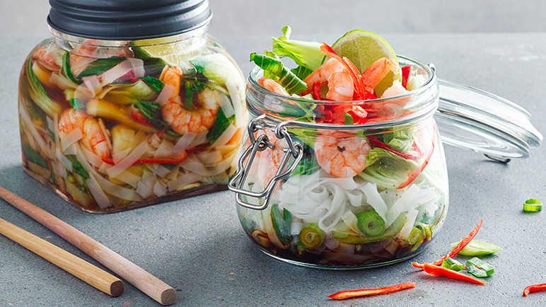

Prawn and Chilli Pho Jar

Description
Ingredients
- 50g dried rice noodles
- 7 pak choi leaves, stems removed and sliced into strips
- 1 red chilli, thinly sliced
- 1 spring onion, thinly sliced
- 2 tbsp reduced-salt soy sauce
- 1 tsp fish sauce
- 1 tbsp good quality miso paste
- 6 ready-cooked king prawns
- 1 lime
Steps
- Soak the noodles according to packet instructions. This should take about 3 minutes, in which time you can prep the pak choi, chilli and spring onion.
- Add the soy sauce, fish sauce and spring onion to the bottom of your jar. Drain and rinse the noodles and add to the jar. Layer with the pak choi, spring onion and red chilli, then top with the miso paste, prawns and a wedge of lime.
- Once ready to eat, remove the lime wedge and add enough hot water to cover. Stir through until the miso paste has dissolved and all is combined. Squeeze in your lime and enjoy.
Home